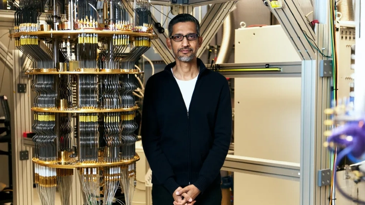

Rối lượng tử và Qubit: Nền tảng của máy tính lượng tử
Máy tính lượng tử đang mở ra một kỷ nguyên mới trong khoa học và công nghệ. Khác với máy tính cổ điển dựa trên bit 0 hoặc 1, máy tính lượng tử dựa trên qubit và hiện tượng rối lượng tử, giúp xử lý hàng triệu trạng thái cùng lúc. Bài viết này sẽ đưa bạn đi từ cơ bản đến ứng dụng thực tiễn, với những bước tiến mới nhất như chip Willow 105 qubit của Google.
1. Giới thiệu về cơ học lượng tử
Cơ học lượng tử nghiên cứu hành vi của các hạt vi mô như electron, photon, và nguyên tử. Ở cấp độ này, vật chất không tuân theo các quy luật vật lý cổ điển mà vận hành theo xác suất và hàm sóng. Hai hiện tượng quan trọng là:
-
Chồng chất lượng tử (Superposition): Một hạt lượng tử có thể tồn tại đồng thời ở nhiều trạng thái khác nhau. Ví dụ, một photon có thể đi qua hai khe hở cùng lúc trong thí nghiệm khe đôi. Đây là nền tảng cho qubit trong máy tính lượng tử, vì một qubit có thể đại diện cho 0 và 1 cùng lúc.
-
Rối lượng tử (Entanglement): Hai hay nhiều hạt trở thành một hệ thống liên kết, thay đổi trạng thái của hạt này sẽ lập tức ảnh hưởng hạt kia, bất kể khoảng cách. Einstein từng gọi đây là “hành động ma quái từ xa”. Rối lượng tử là yếu tố quan trọng giúp qubit phối hợp trong máy tính lượng tử, tạo sức mạnh song song vượt trội.
Hiện nay, cơ học lượng tử không chỉ là lý thuyết trừu tượng mà đã được ứng dụng trong chip lượng tử, cảm biến lượng tử, và truyền thông lượng tử. Nó đặt nền móng cho cách mạng xử lý thông tin trong thế kỷ 21.
2. Qubit là gì?
Qubit là đơn vị cơ bản của thông tin trong máy tính lượng tử, khác hoàn toàn với bit truyền thống (chỉ có 0 hoặc 1). Nhờ chồng chất lượng tử, qubit có thể đồng thời ở trạng thái 0 và 1.
Điều này mang lại khả năng song song cực mạnh, cho phép máy tính lượng tử xử lý nhiều phép tính cùng lúc. Ví dụ, với 3 qubit, máy tính lượng tử có thể đại diện cho 8 trạng thái cùng lúc, và với 50 qubit, số trạng thái là hơn 1 nghìn tỷ. Đây là lý do tại sao máy tính lượng tử hứa hẹn vượt xa máy tính cổ điển.
Số lượng qubit hiện tại và chip mới:
-
Các máy tính lượng tử thực nghiệm hiện nay đạt khoảng 100–127 qubit ổn định.
-
Google gần đây ra mắt chip Willow 105 qubit, thử nghiệm thuật toán tối ưu hóa phức tạp, mở đường cho các hệ thống lớn hơn trong tương lai.
-
Tương lai, các nhà khoa học kỳ vọng đạt vài trăm hoặc vài nghìn qubit, đủ mạnh để giải quyết các bài toán mà máy tính cổ điển không thể.
Ngoài chồng chất, qubit còn được đánh giá bằng độ ổn định và khả năng duy trì trạng thái rối lâu dài, hai yếu tố quyết định hiệu năng của máy lượng tử.
3. Rối lượng tử – Liên kết kỳ diệu của các qubit
Rối lượng tử là “linh hồn” của máy tính lượng tử. Khi các qubit rối với nhau, trạng thái của một qubit lập tức ảnh hưởng qubit kia. Nhờ đó, máy tính lượng tử có thể phối hợp đồng thời hàng triệu phép tính, vượt xa năng lực máy tính cổ điển.
Ví dụ, chip Willow 105 qubit của Google cho phép các qubit rối lượng tử hoạt động cùng nhau để thử nghiệm thuật toán mô phỏng phân tử. Khi số lượng qubit tăng, sức mạnh tính toán tăng theo cấp số nhân.
Một điểm thú vị: rối lượng tử không truyền thông tin vượt tốc độ ánh sáng, nhưng lại cực kỳ hiệu quả trong việc xử lý song song và bảo mật thông tin. Đây chính là yếu tố khiến máy tính lượng tử trở thành công cụ giải quyết bài toán phức tạp trong khoa học, y học, trí tuệ nhân tạo, và tối ưu hóa toàn cầu.
4. Nguyên tắc hoạt động của máy tính lượng tử
Máy tính lượng tử hoạt động dựa trên hai nguyên tắc chính:
-
Chồng chất lượng tử: Mỗi qubit có thể đại diện cho nhiều trạng thái cùng lúc, tạo khả năng song song.
-
Rối lượng tử: Các qubit rối với nhau, phối hợp trong phép tính để tạo ra sức mạnh tính toán vượt trội.
Ví dụ, để mô phỏng một phân tử phức tạp, một máy tính cổ điển phải thử từng cấu hình riêng lẻ. Máy tính lượng tử, nhờ chồng chất và rối lượng tử, có thể thử hàng triệu cấu hình cùng lúc, giảm thời gian tính toán từ hàng triệu năm xuống vài giờ hoặc vài ngày.

Chip Willow 105 qubit của Google là minh chứng sống cho nguyên tắc này, thử nghiệm thuật toán tối ưu hóa và mô phỏng phân tử phức tạp chưa từng thực hiện trên máy tính truyền thống.
5. Các công nghệ tạo và duy trì qubit
Hiện nay, qubit có thể được tạo ra bằng nhiều công nghệ khác nhau, mỗi loại có ưu nhược điểm riêng:
-
Siêu dẫn (Superconducting Qubits): Hoạt động ở nhiệt độ cực thấp, dễ mở rộng số lượng, nhưng nhạy cảm với nhiễu môi trường.
-
Ion bẫy (Trapped Ion): Qubit là ion bị giữ bằng từ trường, ổn định và ít sai số, nhưng khó nhân rộng số lượng lớn.
-
Photon Qubit: Dùng ánh sáng để truyền qubit, tiềm năng cho giao tiếp lượng tử, đặc biệt trong bảo mật.
-
Spin Qubit: Dựa trên spin electron trong bán dẫn, có thể tích hợp chip nhỏ gọn, hướng tới máy lượng tử thương mại.
Mục tiêu chính của nghiên cứu là tăng số lượng qubit, duy trì trạng thái rối lâu hơn, và giảm sai số, để máy tính lượng tử tương lai có thể đạt hàng trăm hoặc hàng nghìn qubit.
6. Ứng dụng tiềm năng của máy tính lượng tử
Máy tính lượng tử hứa hẹn thay đổi nhiều lĩnh vực:
-
Tối ưu hóa: Giải quyết các bài toán phức tạp về logistics, năng lượng, giao thông.
-
Mô phỏng phân tử và dược phẩm: Tính toán cấu trúc phân tử chính xác, đẩy nhanh phát triển thuốc mới.
-
Trí tuệ nhân tạo: Tăng tốc thuật toán học máy, mô hình hóa dữ liệu lớn.
-
Mã hóa lượng tử: Bảo mật thông tin tuyệt đối nhờ rối lượng tử.
-
Dự báo khí hậu: Mô phỏng hệ thống phức tạp, đưa ra dự đoán chính xác hơn.
Chip Willow 105 qubit của Google mở đường thử nghiệm thuật toán tối ưu hóa và mô phỏng phức tạp, đưa chúng ta tiến gần hơn tới máy tính lượng tử thương mại.
7. Giao tiếp lượng tử và bảo mật lượng tử
Rối lượng tử cũng được ứng dụng trong giao tiếp lượng tử siêu bảo mật. Khóa mã lượng tử được truyền qua các hạt rối lượng tử. Nếu có ai can thiệp, trạng thái rối bị phá vỡ, cảnh báo ngay lập tức.
Tuy nhiên, rối lượng tử không thể truyền thông tin vượt tốc độ ánh sáng, vì vậy “giao tiếp xuyên không-thời gian” vẫn là khoa học viễn tưởng. Thực tế, nó chủ yếu ứng dụng trong bảo mật dữ liệu, truyền thông quân sự và ngân hàng, nơi việc phát hiện xâm nhập ngay lập tức là quan trọng.
8. Thách thức công nghệ hiện nay
Mở rộng số lượng qubit và duy trì trạng thái rối lâu dài là thử thách lớn:
-
Decoherence: Qubit dễ mất trạng thái lượng tử nếu môi trường nhiễu quá nhiều.
-
Nhiệt độ cực thấp: Nhiều loại qubit cần gần 0K, điều kiện cực kỳ khắt khe.
-
Sai số: Các qubit hiện tại vẫn có tỷ lệ lỗi cao, cần thuật toán sửa lỗi phức tạp.
-
Khả năng mở rộng: Máy thử nghiệm mới đạt 100–127 qubit, nhưng cần vài trăm hoặc hàng nghìn qubit để thực sự mạnh mẽ.
Các nhà khoa học đang nỗ lực giải quyết các vấn đề này thông qua cải tiến công nghệ qubit, thuật toán sửa lỗi và môi trường cách ly cực tốt.
9. Các công ty và dự án máy tính lượng tử nổi bật
Một số công ty dẫn đầu nghiên cứu máy tính lượng tử:
-
Google: Chip Willow 105 qubit, thử nghiệm thuật toán tối ưu hóa và mô phỏng phân tử.
-
IBM Quantum: Máy lượng tử siêu dẫn, liên tục tăng số lượng qubit.
-
Rigetti Computing: Phát triển chip siêu dẫn, hướng tới máy lượng tử thương mại.
-
D-Wave: Tập trung vào qubit annealing, ứng dụng tối ưu hóa thực tế.
Những bước tiến này đánh dấu sự phát triển từ phòng thí nghiệm sang ứng dụng thực tiễn, với mục tiêu cuối cùng là máy tính lượng tử mạnh mẽ và ổn định, có thể giải quyết các bài toán thực sự khó.
10. Tương lai của máy tính lượng tử và khoa học lượng tử
Trong 5–10 năm tới, máy tính lượng tử sẽ có thể:
-
Giải quyết bài toán mà máy tính cổ điển mất hàng triệu năm để tính.
-
Tối ưu hóa logistics, năng lượng, tài chính, và mạng lưới phân phối toàn cầu.
-
Mô phỏng phân tử chính xác, đẩy nhanh phát triển thuốc và vật liệu mới.
-
Tăng tốc trí tuệ nhân tạo và mô hình hóa dữ liệu lớn.
-
Cung cấp giao tiếp lượng tử bảo mật tuyệt đối, ngăn chặn xâm nhập dữ liệu.
Các chip như Willow 105 qubit chỉ là bước khởi đầu. Khi số lượng qubit tăng lên hàng trăm hoặc hàng nghìn, máy tính lượng tử sẽ thực sự cách mạng hóa cách chúng ta xử lý thông tin, nghiên cứu khoa học và tương tác với thế giới xung quanh.
Kết luận
Rối lượng tử và qubit không còn là lý thuyết trừu tượng mà đang trở thành nền tảng của một cuộc cách mạng khoa học. Từ chip Willow 105 qubit của Google đến các công nghệ qubit khác, máy tính lượng tử hứa hẹn giải quyết các vấn đề mà máy tính cổ điển không thể.
Trong tương lai, máy tính lượng tử sẽ trở thành công cụ thiết yếu, thay đổi cách chúng ta tương tác với dữ liệu, phát triển dược phẩm, tối ưu hóa mạng lưới toàn cầu và bảo mật thông tin. Đây chính là lý do vì sao cơ học lượng tử không chỉ là vật lý lý thuyết, mà là cánh cửa dẫn đến tương lai của công nghệ thông tin.